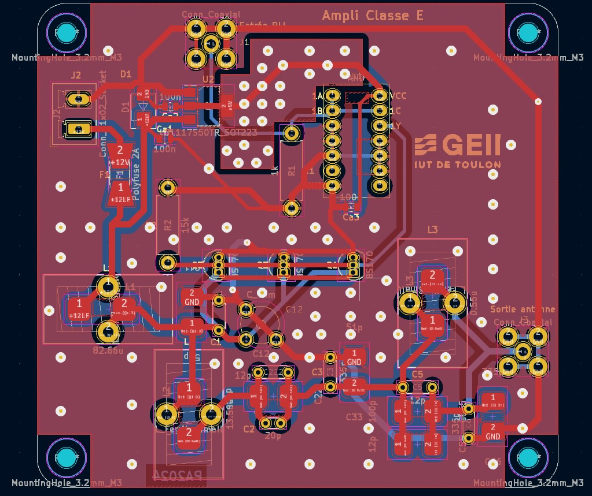

Antenne Émission Très Longue Distance WSPR

caméra JeVoisPro

Le projet de l'antenne d'émission très longue distance WSPR était un travail de groupe où chaque membre était responsable d'une partie du système, avec l'objectif de créer une antenne permettant de communiquer sur des milliers de kilomètres. Pour ma part, j'ai travaillé sur la partie amplification, en concevant un amplificateur de classe E. Ce travail m'a permis de découvrir l'importance de l'amplification dans les systèmes de communication longue distance. Une fois nos différentes parties réalisées, elles ont été assemblées pour former un système fonctionnel, offrant une vraie expérience collaborative et technique.
Le projet consistait à développer un système de vision artificielle pour détecter et localiser en 3D des objets colorés en temps réel à l'aide de la caméra JeVois-Pro. Pour cela, j'ai utilisé OpenCV pour le traitement d'image et Python pour les algorithmes de vision, permettant ainsi de traiter les images capturées par la caméra. J'ai également travaillé sur la calibration de la caméra et la géométrie 3D pour assurer une précision optimale dans la localisation des objets. Le système a permis la détection fiable des objets rouges en temps réel, tout en offrant une interface de visualisation et une optimisation des performances de traitement pour garantir une réactivité maximale.
Le projet OptiPlant était un travail de groupe où chaque membre de la classe avait une partie à gérer dans la réalisation d'un site web. Ma contribution s'est concentrée sur la partie CSS, en m'assurant que le site respecte les normes RGAA (Référentiel Général d'Accessibilité pour les Administrations) afin de garantir une accessibilité optimale pour tous les utilisateurs. J'ai travaillé sur le respect des normes de conception de sites internet, assurant ainsi une meilleure ergonomie et une navigation fluide pour les personnes handicapées, tout en veillant à ce que le site soit conforme aux standards d'accessibilité.
Le projet d'antenne de communication très longue distance WSPR a été particulièrement intéressant, car il a marqué notre premier véritable travail de groupe. Chacun d'entre nous était concentré sur une partie spécifique du projet, ce qui nous a permis de nous spécialiser et de perfectionner nos compétences dans notre domaine. Nous n'avons pas interféré avec le travail des autres, mais une fois que toutes les parties ont été assemblées, il était fascinant de voir comment chaque composant contribué au fonctionnement global du système. Cette approche collaborative nous a permis de comprendre l'importance du travail en équipe et de voir concrètement comment chaque élément s'intègre pour créer un système fonctionnel.
Le projet de la caméra JeVois-Pro a été très intéressant, car il a introduit une toute nouvelle façon de travailler et de programmer. C'était fascinant de pouvoir voir en direct les résultats de nos algorithmes, car tout se passait sur l'écran de la caméra. Cela nous a permis de mieux comprendre le traitement d'image en temps réel et de visualiser immédiatement l'impact de nos ajustements. Cette approche interactive a rendu l'apprentissage plus dynamique et m'a donné une réelle satisfaction de voir les objets détectés et localisés en temps réel, ce qui a rendu l'expérience à la fois éducative et captivante.
Le projet OptiPlant a été assez peu intéressant, surtout la partie sur laquelle j'ai travaillé. C'était une tâche longue et répétitive, principalement liée à la mise en place du CSS et du respect des normes RGAA. Ce qui a rendu l'expérience encore plus frustrante, c'est que mon travail dépendait beaucoup de l'avancement des autres. J'ai donc dû passer beaucoup de temps à attendre que les autres parties du projet avancent pour pouvoir finaliser ma propre partie. Ce manque de fluidité dans le travail de groupe a rendu l'expérience assez monotone et moins motivante.